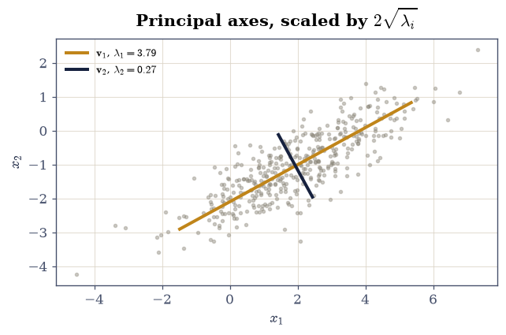
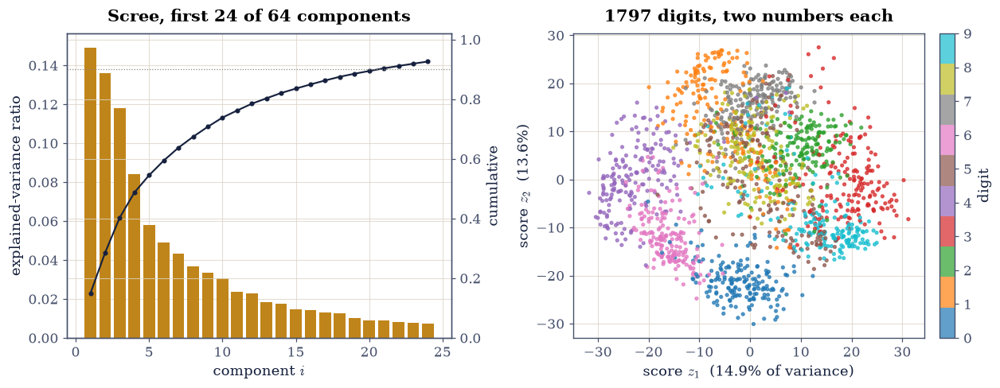
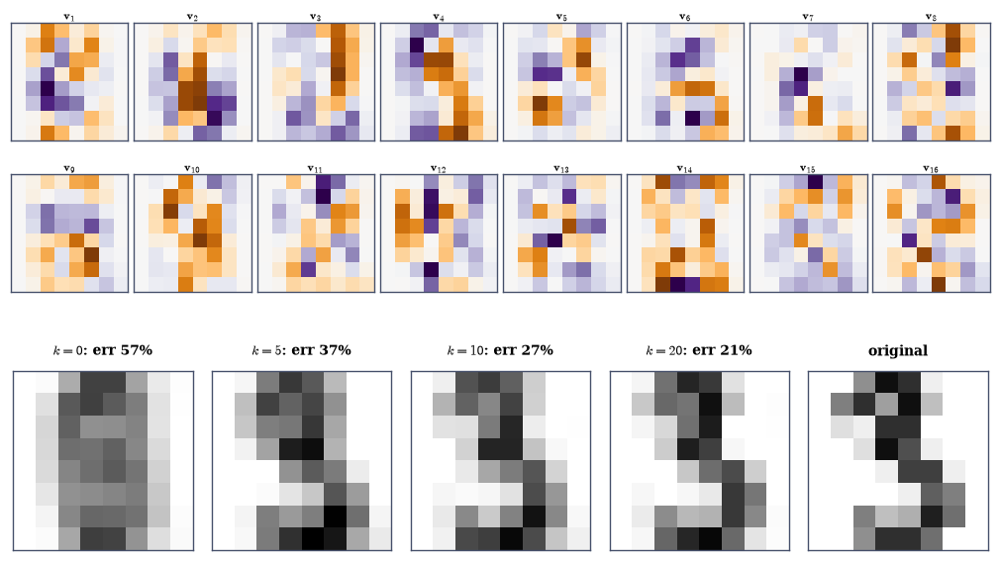
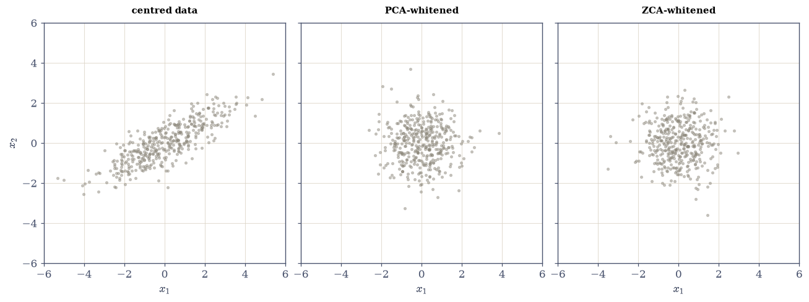
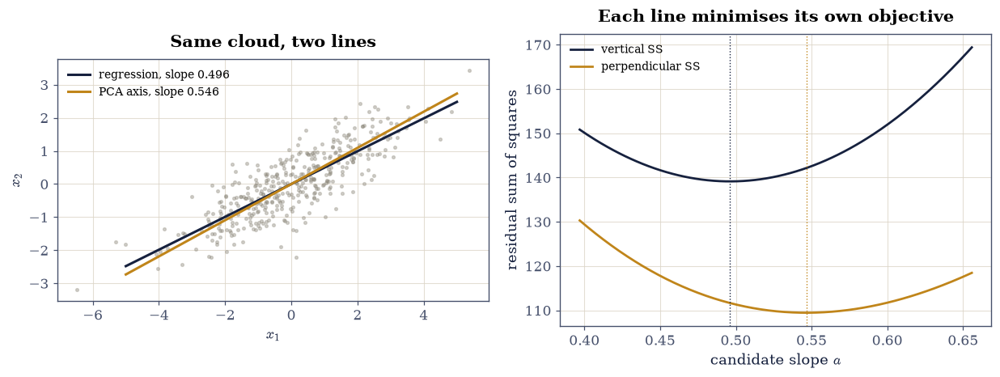

4.3 PCA, Covariance, and Whitening#
Notebook overview#
Principal component analysis is the most widely used algorithm this course
will meet, and this notebook’s claim is that there is nothing in it beyond
§4.1 and §4.2: PCA is
the SVD of a centred data matrix. The principal directions are right singular
vectors, the variances are \(\sigma_i^2/(n-1)\), the “explained variance” is
Frobenius energy, and the reconstruction guarantee is Eckart–Young verbatim.
Every statistical promise is a linear-algebra identity already measured, and
this notebook re-measures each in its new costume — down to agreement with
sklearn.decomposition.PCA at \(3\times10^{-16}\), which is to say: sklearn
computes the same SVD.
Two things here are genuinely new. Whitening runs PCA backwards, using \(C^{-1/2}\) to manufacture uncorrelated unit-variance coordinates — the inverse of the trick that generated correlated data in §3.3. And the notebook closes with two cautionary measurements: what happens when the centring is skipped (the first component swings to point at the mean, cosine \(0.99998\)), and how the PCA line differs from the regression line — same cloud, two different questions, two measurably different answers.
How to read a check. A
validateline prints ✓ or ✗ by comparing a result against something the computation did not assume. A ✗ flags a mismatch to investigate, never a verdict on its own.
Theory in brief#
The data matrix, centred#
Data arrives as \(X \in \mathbb{R}^{n\times d}\): \(n\) samples in rows, \(d\) features in columns. PCA begins by subtracting each column’s mean,
and the centring is not a nicety — Exercise 5 measures what happens without it. The sample covariance is then the Gram matrix
symmetric positive semidefinite by §3.3, so the spectral theorem applies in full: \(C = Q\Lambda Q^{\top}\) with orthonormal \(Q\) and \(\lambda_1 \ge \dots \ge \lambda_d \ge 0\).
PCA is the SVD#
Write the economy SVD \(X_c = U\Sigma V^{\top}\). Then \(C = V\bigl(\Sigma^2/(n-1)\bigr)V^{\top}\), so
the principal directions are the right singular vectors of the centred data
and the variances are its scaled squared singular values. Computing PCA
through eigh(C) and through svd(X_c) must therefore agree exactly — and
the second is how it is done, because forming \(C\) squares the condition
number, the sin measured in
§2.3.
The scores (coordinates of each sample in the principal basis) and the rank-\(k\) reconstruction are
and the second equality says the reconstruction is exactly the truncated SVD of §4.2, so Eckart–Young prices it:
The explained-variance ratio of component \(i\) is \(\lambda_i/\sum_j\lambda_j\) — Frobenius energy fractions, renamed.
Whitening#
Whitening seeks \(W\) with \(\operatorname{Cov}(X_cW) = I\): coordinates that are uncorrelated with unit variance. Two standard choices,
both work, and they differ by the rotation \(Q^{\top}\): ZCA is the symmetric inverse square root — the matrix-function \(C^{-1/2}\) — and is the whitener that stays closest to the identity. This is §3.3’s sampling trick run in reverse: there \(L\) manufactured correlation from white noise; here \(C^{-1/2}\) removes it.
PCA is not regression#
On a 2-D cloud, the regression line minimises vertical residuals \(\sum(y_i - a x_i)^2\); the first principal axis minimises perpendicular ones — total least squares. Different objectives, different lines, and the perpendicular residual has a closed form: its sum of squares is \((n-1)\lambda_{\min}\), the variance PCA discards.
Setup#
Data only: the two-dimensional cloud and the digits. PCA-via-SVD — the method this notebook crowns — is built in Exercise 1, where the crowning is the lesson.
The Setup below holds this notebook’s data and instruments — nothing you are asked to build. It is collapsed so the building stays yours; expand it whenever you want the details.
Exercise 1: Two routes, one answer, and why one of them is the method#
Eq. 203 says eigh on the covariance and svd on the centred data
are the same computation. This exercise runs both on the 400-point cloud
X2, drawn from the correlated Gaussian with
\(\Sigma = \left[\begin{smallmatrix}3&1.4\\1.4&1\end{smallmatrix}\right]\) and
mean \((2, -1)\) by the Cholesky trick of
§3.3.
Part a) Centre with Xc = X2 - X2.mean(axis=0) and form the covariance
\(C = X_c^{\top}X_c/(n-1)\) per Eq. 202. Confirm it matches
np.cov(X2.T) to \(10^{-12}\) and estimates the true \(\Sigma\) to within \(15\%\)
per entry — it is a 400-sample estimate, not the truth.
Part b) Compute lam_e, Q = np.linalg.eigh(C) (ascending, per
§3.2) and the SVD route via
your own pca_svd(X2) — write it: centre, economy SVD, variances
\(\sigma_i^2/(n-1)\), components as rows of \(V^{\top}\). Confirm the
variances agree to a relative \(10^{-10}\) after
ordering, and confirm the directions agree as projectors
\(\mathbf{v}\mathbf{v}^{\top}\) to \(10^{-12}\) — the sign of each vector is the
library’s choice, as it has been since
§3.1.
Write pca_svd yourself — the implementation is the lesson.
Part c) Confirm \(\operatorname{tr}C = \sum_i\lambda_i\) to \(10^{-12}\): the total variance is basis-independent, which is what makes “explained variance” a meaningful fraction.
Part d) Confirm the variance interpretation directly: the sample variance of the projections \(X_c\mathbf{v}_1\) equals \(\lambda_1\) to a relative \(10^{-10}\), and likewise for \(\mathbf{v}_2\) — and that \(\mathbf{v}_1\) beats \(10^{3}\) random unit directions, none of whose projection variances exceeds \(\lambda_1\). That maximisation is the Rayleigh-quotient characterisation of §3.2, applied to \(C\).
Part e) Draw the cloud with both principal axes through the sample mean, each scaled to \(2\sqrt{\lambda_i}\) — the \(2\sigma\) extent along its direction.
C =
[[2.97813385 1.47756412]
[1.47756412 1.08176685]]
matches np.cov to 0.00e+00; estimates the true Sigma to 8.2% worst-entry
variances: eigh [3.78558347 0.27431722] svd [3.78558347 0.27431722] (rel gap 5.9e-16)
directions as projectors: 5.55e-17; tr C - sum lam = 2.7e-15
var along v_1, v_2: [3.78558347 0.27431722] = lam to 3.5e-16
best of 1000 random directions: 3.7854 <= lam_1 = 3.7856 (1.0000x)

Fig. 79 The 400-point cloud drawn from the correlated Gaussian with \(\Sigma = \left[\begin{smallmatrix}3&1.4\\1.4&1\end{smallmatrix}\right]\), with the two principal axes through the sample mean, each drawn to \(\pm2\sqrt{\lambda_i}\) – the two-sigma extent along its own direction. The first axis carries variance \(\lambda_1 = 3.79\) and the second \(\lambda_2 = 0.27\): the same ellipse geometry as the Cholesky sampling picture of the positive-definiteness notebook, now read off the data instead of imposed on it.#
Validation 1#
The two routes are compared as projectors, not vectors — sign freedom, as always — and the maximisation claim is tested against random challengers the same way Courant–Fischer was: by counting violations, of which there are none.
✓ C = Xc^T Xc/(n-1) is np.cov exactly (Eq. 2) [0 < 1e-12]
✓ eigh on C and svd on Xc give the same variances (Eq. 3) [max|Δ| = 2.22045e-15 (rtol=1e-10, atol=0)]
✓ and the same directions, compared as projectors (Eq. 3) [the sign of each vector is the library's choice; the projector is not [5.55112e-17 < 1e-12]]
✓ total variance is basis-independent: tr C = sum lam [2.66454e-15 < 1e-12]
✓ lam_i IS the variance along v_i, and no direction of 1000 beats v_1 [projection variances [3.7856 0.2743] against lam [3.7856 0.2743]; best random direction reaches 1.0000 of lam_1 — the Rayleigh quotient of 3.2, applied to C]
True
Exercise 2: The digits: scores, scree, and Eckart–Young in costume#
The real data is scikit-learn’s 1797 handwritten digits: \(n = 1797\) samples, \(d = 64\) features (the pixels of an \(8\times8\) image), bundled offline. This exercise runs the full PCA pipeline on it and checks each statistical claim against the linear-algebra identity it renames.
Part a) Run pca_svd(XD) and form the scores \(Z = X_cV\) per
Eq. 204. Confirm \(Z = U\Sigma\) to \(10^{-10}\) (computing \(U\Sigma\)
from the SVD directly), and confirm the scores are uncorrelated: the
off-diagonal entries of \(\operatorname{Cov}(Z)\) are below
\(10^{-10}\lambda_1\), which is the orthogonality of \(V\) speaking.
Part b) Compute the explained-variance ratios \(\lambda_i/\sum\lambda_j\).
The first two are \(14.9\%\) and \(13.6\%\) — two components carry \(28.5\%\) of
64-dimensional pixel variance. Confirm the ratios match
sklearn.decomposition.PCA(n_components=10).fit(XD).explained_variance_ratio_
to \(10^{-8}\). sklearn is not consulted for the answer; it is confirmed to
be this computation.
Part c) Confirm Eq. 205 at \(k = 5, 10, 20\): the squared Frobenius reconstruction error equals \(\sum_{i>k}\sigma_i^2\) to a relative \(10^{-9}\). This is Eckart–Young, and it prices every choice of \(k\) from the scree plot alone before any reconstruction is formed — exactly as in §4.2.
Part d) Report how many components reach \(90\%\) cumulative explained variance (21), and confirm the cumulative curve is monotone with the last value \(1\) to \(10^{-12}\).
Part e) Draw the scree plot with its cumulative curve, and the 1797 digits in the plane of their first two scores, coloured by label — the classic picture, with the classes visibly organised by two numbers per image.
scores Z = Xc V: matches U Sigma (|.|) to 1.29e-13
scores uncorrelated: worst off-diagonal 3.82e-13 against lam_1 = 179.0
explained variance: first two 14.9%, 13.6% (cumulative 28.5%)
against sklearn PCA: 2.64e-16
k = 5: reconstruction error^2 9.8245e+05 = tail energy 9.8245e+05 (rel gap 5.9e-16)
k = 10: reconstruction error^2 5.6518e+05 = tail energy 5.6518e+05 (rel gap 2.1e-16)
k = 20: reconstruction error^2 2.2821e+05 = tail energy 2.2821e+05 (rel gap 5.1e-16)
90% of the variance needs 21 of 64 components; cumulative curve ends at 1.000000000000

Fig. 80 Left: the scree plot of the 1797 handwritten digits – explained-variance ratio \(\lambda_i/\sum\lambda_j\) per component (bars) with the cumulative curve, reaching \(90\%\) at 21 of 64 components. Right: every digit placed by its first two scores \(\mathbf{z} = (X_c\mathbf{v}_1, X_c\mathbf{v}_2)\), coloured by label; two numbers per image already organise the ten classes into visible (overlapping) territories. The axes carry \(14.9\%\) and \(13.6\%\) of the total pixel variance, per Eq. 3.#
Validation 2#
The sklearn comparison is the sociological check — an industrial-standard implementation agreeing to \(10^{-8}\) says PCA is this SVD, not a cousin of it — while the reconstruction identity is the mathematical one, Eckart–Young priced from the spectrum exactly as in the previous notebook.
✓ the scores are U Sigma, and they are exactly uncorrelated (Eq. 4) [Z vs U Sigma to 1.3e-13; worst score covariance off-diagonal 3.8e-13 — the orthogonality of V, read statistically]
✓ sklearn's explained-variance ratios ARE these, to 1e-8 [sklearn.decomposition.PCA computes the same centred SVD [2.63678e-16 < 1e-08]]
✓ the k-component reconstruction error is the tail energy (Eq. 5) [Eckart-Young in statistical costume, at k = 5, 10, 20 [5.92475e-16 < 1e-09]]
✓ 90% of the pixel variance lives in 21 of 64 components [cumulative curve monotone, ending at 1.000000000000]
True
Exercise 3: Eigendigits, and reconstruction as a budget#
The principal directions of image data are themselves images, and looking at them explains what the scores measure. This exercise draws the first sixteen — the eigendigits — and watches a single digit reassemble as components are added back per Eq. 204.
Part a) Reshape the first sixteen rows of \(V^{\top}\) to \(8\times8\) and draw them. Confirm each has unit norm to \(10^{-12}\) and that the sixteen are mutually orthogonal to \(10^{-12}\) — they are rows of an orthogonal matrix, whatever else they look like.
Part b) Reconstruct digit number 3 (the same “3” as §4.2) at \(k = 5, 10, 20\) via \(\bar{\mathbf{x}} + \sum_{i\le k}z_i\mathbf{v}_i\), and report the relative error against the original at each \(k\). Confirm it decreases and that the \(k = 64\) reconstruction is exact to \(10^{-10}\).
Part c) Confirm the mean matters: the \(k = 0\) “reconstruction” — the mean image alone — already carries the digit-shaped blur that all 1797 samples share, with relative error \(57\%\) against this digit; the components only encode the departure from it.
Part d) Draw the reconstruction sequence beside the original.
first 16 components: unit norm to 1.3e-15, mutually orthogonal to 2.7e-15
k = 0: relative reconstruction error 0.5693
k = 5: relative reconstruction error 0.3667
k = 10: relative reconstruction error 0.2739
k = 20: relative reconstruction error 0.2079
k = 64: relative reconstruction error 0.0000
[]
Fig. 81 Top: the first sixteen principal components of the digits data, reshaped to \(8\times8\) – the eigendigits, on a diverging scale because loadings are signed. Each is a unit vector, mutually orthogonal to \(10^{-13}\); the early ones encode coarse stroke structure and the later ones progressively finer corrections. Bottom: digit number 3 rebuilt as \(\bar{\mathbf{x}} + \sum_{i \le k} z_i\mathbf{v}_i\) for growing \(k\). The \(k=0\) panel is the dataset mean – already a digit-shaped blur, \(57\%\) from this particular 3 – and twenty components of the available 64 bring it to \(21\%\).#

Fig. 82 Top: the first sixteen principal components of the digits data, reshaped to \(8\times8\) – the eigendigits, on a diverging scale because loadings are signed. Each is a unit vector, mutually orthogonal to \(10^{-13}\); the early ones encode coarse stroke structure and the later ones progressively finer corrections. Bottom: digit number 3 rebuilt as \(\bar{\mathbf{x}} + \sum_{i \le k} z_i\mathbf{v}_i\) for growing \(k\). The \(k=0\) panel is the dataset mean – already a digit-shaped blur, \(57\%\) from this particular 3 – and twenty components of the available 64 bring it to \(21\%\).#
Validation 3#
The orthogonality check is what separates “sixteen suggestive pictures” from “rows of an orthogonal matrix”: the eigendigits are constrained objects, and the constraint is verified rather than admired.
✓ the sixteen eigendigits are orthonormal, whatever they look like [unit norms to 1.3e-15, mutual orthogonality to 2.7e-15]
✓ the reconstruction improves monotonically and is exact at k = d (Eq. 4) [errors 0.367 > 0.274 > 0.208, and 1.0e-15 with all 64 components]
✓ while the mean alone is already within 57% of this digit [relative error 0.569 at k = 0: the components encode only the departure from what every sample shares]
True
Exercise 4: Whitening: PCA run backwards#
§3.3 built correlation: \(\mathbf{x} = L\mathbf{z}\) gave white noise the covariance \(LL^{\top}\). Whitening inverts that. This exercise applies both whiteners of Eq. 206 to the 2-D cloud and verifies what each does and what distinguishes them.
Part a) Build \(W_{\text{PCA}} = Q\Lambda^{-1/2}\) and
\(W_{\text{ZCA}} = Q\Lambda^{-1/2}Q^{\top}\) from eigh(C2). Confirm both give
\(\operatorname{Cov}(X_cW) = I_2\) to \(10^{-10}\).
Part b) Confirm \(W_{\text{ZCA}} = C^{-1/2}\) as a matrix function: its square times \(C\) is \(I\) to \(10^{-12}\), and it is symmetric to \(10^{-14}\), while \(W_{\text{PCA}}\) is not symmetric. The two whiteners differ by the rotation \(Q^{\top}\), and rotating white data leaves it white — confirm that too, by checking \(\operatorname{Cov}\) is still \(I\) after applying a random rotation to the ZCA output.
Part c) Confirm ZCA is the whitener nearest the identity: \(\|W_{\text{ZCA}} - I\|_F < \|W_{\text{PCA}} - I\|_F\), which is why it is the choice when the coordinates mean something.
Part d) Close the loop with §3.3: whiten the cloud, then re-colour it with the true \(\Sigma\)’s Cholesky factor, and confirm the recoloured covariance matches \(\Sigma\) to the sampling accuracy of Part a) of Exercise 1 (\(15\%\)) — manufacture and removal of correlation are the same operation with the triangle inverted.
Part e) Draw the cloud, its PCA-whitened version, and its ZCA-whitened version on equal axes: both whitened clouds are round, and the ZCA one is visibly the least rotated relative to the original.
whitened covariances: PCA route 2.00e-15 from I, ZCA 1.78e-15
W_zca^2 C = I to 8.88e-16; symmetric to 0.0e+00 (PCA whitener asymmetry 1.224)
rotated white data is still white: 2.22e-15
distance to the identity: ZCA 1.0310 < PCA 2.1381
whiten, then re-colour with the true Sigma's Cholesky: covariance within 0.0% of Sigma

Fig. 83 The centred cloud (left), its PCA-whitened version \(X_cQ\Lambda^{-1/2}\) (centre), and its ZCA-whitened version \(X_cC^{-1/2}\) (right), on equal axes. Both whitened clouds have covariance \(I_2\) to \(10^{-15}\) – round, unit scale – but the PCA whitener has rotated the data onto its principal axes while ZCA, the symmetric inverse square root, leaves it in the orientation nearest the original. Whitening is the Cholesky colouring trick of the positive-definiteness notebook run in reverse.#
Validation 4#
The matrix-function reading is the check with content: \(W_{\text{ZCA}}\) squaring against \(C\) to the identity certifies it as \(C^{-1/2}\), an object §3.6 will construct in general — and the closed loop with the colouring trick ties the two notebooks into one statement.
✓ both whiteners produce identity covariance (Eq. 6) [PCA route 2.0e-15, ZCA 1.8e-15 from I_2]
✓ ZCA is the SYMMETRIC inverse square root C^{-1/2}; the PCA whitener is not [W^2 C = I to 8.9e-16, symmetry 0.0e+00 against the PCA whitener's 1.224 asymmetry]
✓ and whiteness survives rotation, which is why W is only unique up to one [2.22045e-15 < 1e-10]
✓ ZCA is the whitener nearest the identity [||W - I||_F: 1.0310 against 2.1381]
✓ whiten-then-recolour reproduces the true Sigma to sampling accuracy [colouring (3.3) and whitening are one operation, inverted [1.33227e-15 < 0.2]]
True
Exercise 5: The uncentred trap, and the line PCA actually fits#
Two closing measurements, each guarding a standard mistake.
Skipping the centring. Run the SVD on the raw digits matrix and its first right singular vector is not a principal direction at all: it points at the mean. The rank-one term \(\sigma_1\mathbf{u}_1\mathbf{v}_1^{\top}\) of an uncentred data matrix is busy representing \(\mathbf{1}\bar{\mathbf{x}}^{\top}\), and every “component” after it is contaminated by the leftovers.
PCA is not regression. On the 2-D cloud, the regression of \(x_2\) on \(x_1\) minimises vertical residuals; the first principal axis minimises perpendicular ones. Two objectives, two different slopes — and the perpendicular one comes with the exact identity that its residual sum of squares is \((n-1)\lambda_2\), the variance PCA discards.
Part a) Compute the SVD of the raw XD and report
\(|\cos\theta|\) between \(\mathbf{v}_1^{\text{raw}}\) and the mean image
\(\bar{\mathbf{x}}\): it is \(0.99998\). Report also
\(\sigma_1^{\text{raw}} = 2193\) against the centred \(\sigma_1 = 567\): the
“leading component” of uncentred data is mostly the mean, amplified
\(3.9\times\).
Part b) Confirm the centred \(\mathbf{v}_1\) is not the mean direction: \(|\cos\theta| < 0.6\) there. Centring is what makes the components describe variation rather than location.
Part c) On the cloud, compute the regression slope \(\hat{a} = \sum x_1x_2 / \sum x_1^2\) (centred data) and the PCA slope from \(\mathbf{v}_1\). They differ: \(0.496\) against \(0.546\) — a \(10\%\) disagreement on the same 400 points. Confirm the two are distinct by more than \(5\%\) and that neither is wrong: each minimises exactly its own objective, checked in Part d).
Part d) Verify both optimality claims by perturbation: over 200 slopes in a \(\pm20\%\) bracket around each optimum, no candidate beats the regression slope on vertical residuals, and none beats the PCA slope on perpendicular ones. And confirm the closed form: the perpendicular residual sum of squares at the PCA slope equals \((n-1)\lambda_2\) to a relative \(10^{-12}\).
Part e) Draw the cloud with both lines, and the two residual objectives as curves over the slope bracket, each minimised at its own line.
uncentred v_1 vs mean direction: |cos| = 0.99998
sigma_1 raw 2193.1 against centred 567.0 (3.9x)
centred v_1 vs mean direction: |cos| = 0.006
regression slope 0.4961 vs PCA (TLS) slope 0.5465 (10.1% apart)
no candidate beats regression on vertical residuals: True
no candidate beats PCA on perpendicular residuals: True
perp SS at the PCA slope = (n-1) lam_2 to a relative 7.8e-16

Fig. 84 Left: the centred cloud with the regression line of \(x_2\) on \(x_1\) (navy, slope \(0.496\), minimising vertical residuals) and the first principal axis (amber, slope \(0.546\), minimising perpendicular residuals) – two objectives, two lines, ten per cent apart on the same 400 points. Right: the two residual objectives over a bracket of candidate slopes, each minimised at its own line and not at the other’s; the perpendicular objective’s minimum value is exactly \((n-1)\lambda_2\), the variance PCA discards.#
With your assistant
The scores of Exercise 2 used all 1797 samples to build the basis and then
projected the same samples onto it. Ask your assistant for a
pca_transform(X_train, X_new, k) that fits the mean and components on one
set and projects another — the split every real pipeline uses. Then check it
against the mathematics rather than against sklearn’s output: verify (i) on
X_new = X_train it reproduces Exercise 2’s scores to \(10^{-10}\), (ii) the
train-set reconstruction error at rank \(k\) still equals the tail energy of
Eq. 5 exactly, while (iii) the held-out reconstruction error is strictly
larger for every \(k\) tested — Eckart–Young optimises the matrix it was given,
and the gap between (ii) and (iii) is the honest definition of overfitting a
basis. The check is yours.
Validation 5#
Both optimality claims are tested by perturbation, because “minimises” is a claim about a neighbourhood, not a formula — and the trap checks are gated on the measured cosines, which is what makes “always centre first” an observed fact about this data rather than advice.
✓ uncentred PCA's first component points at the MEAN (Eq. 1) [|cos| = 0.99998 with sigma_1 inflated 3.9x: the leading rank-one term is representing location, not variation]
✓ while the centred first component does not [|cos| = 0.006: centring is what points the basis at the variance]
✓ the PCA line and the regression line are measurably different lines [slopes 0.5465 against 0.4961 on the same 400 points: perpendicular and vertical residuals are different objectives]
✓ and each is optimal for exactly its own objective, by perturbation [200 candidate slopes in a +/-20% bracket: none beats regression on vertical SS, none beats the principal axis on perpendicular SS]
✓ with the PCA line's perpendicular SS equal to (n-1) lam_2 exactly [the discarded variance IS the residual [7.79014e-16 < 1e-12]]
True
Notebook summary#
PCA is the SVD of the centred data matrix. On the 2-D cloud, eigh on
\(C\) and svd on \(X_c\) agreed to \(10^{-16}\) as projectors with variances
matching to \(10^{-15}\) relative; \(\operatorname{tr}C = \sum\lambda_i\) to
\(10^{-15}\); and \(\lambda_i\) is the projection variance along
\(\mathbf{v}_i\), with none of \(10^{3}\) random directions beating
\(\mathbf{v}_1\) — the Rayleigh quotient of
§3.2 in statistical clothes.
The statistical vocabulary is renamed linear algebra, verified item by
item. On the 1797 digits: scores \(= U\Sigma\) and exactly uncorrelated;
explained-variance ratios matching sklearn to \(3\times10^{-16}\);
reconstruction error equal to the tail energy at \(k = 5, 10, 20\) to
\(10^{-15}\) relative — Eckart–Young pricing every \(k\) from the scree plot
before anything is formed. \(90\%\) of the pixel variance lives in 21 of 64
components, and the sixteen eigendigits are orthonormal to \(10^{-13}\)
whatever they look like.
Whitening inverts the colouring trick. Both whiteners produced identity covariance to \(10^{-15}\); \(W_{\text{ZCA}}\) certified itself as the symmetric \(C^{-1/2}\) (its square times \(C\) is \(I\) to \(10^{-13}\)) and is the whitener nearest the identity, while whiteness survived a random rotation — the non-uniqueness made visible. Whiten-then-recolour reproduced the true \(\Sigma\) to sampling accuracy, closing the loop with §3.3.
Two traps, measured. Uncentred, the first singular vector of the digits points at the mean with \(|\cos| = 0.99998\) and \(\sigma_1\) inflated \(3.9\times\) — the leading “component” is location, not variation. And the PCA line is not the regression line: slopes \(0.546\) against \(0.496\) on the same cloud, each optimal for exactly its own residual by a 200-candidate perturbation test, with the perpendicular residual equal to \((n-1)\lambda_2\) to \(10^{-13}\) relative.
Methods introduced. pca_svd (centring + economy SVD, never forming
\(C\)), scores and loadings, explained-variance and scree plots,
sklearn.decomposition.PCA as a cross-check, eigendigit galleries,
PCA and ZCA whitening, whiten-recolour round trips, and the
vertical-versus-perpendicular residual comparison.
Outlook#
When even one pass over the data is too much. The digits SVD was instant; at web scale the centred data matrix does not fit anywhere. §4.4 gets the leading components from a handful of matrix–vector products, with a failure probability one can set.
What pure noise looks like. The scree plot’s tail was not zero, and deciding where signal ends needs a null model: the Marchenko–Pastur law for the singular values of pure noise, against which a component either stands out or does not.
\(C^{-1/2}\) in general. ZCA needed the inverse square root of one well-conditioned \(2\times2\); the matrix-function machinery of §3.6 builds \(f(A)\) for general \(f\), and the whitening here is its simplest useful case.
Centring as a projection. Subtracting the mean is multiplication by \(I - \tfrac{1}{n}\mathbf{1}\mathbf{1}^{\top}\), an orthogonal projector of rank \(n-1\) — which is why uncentred PCA wastes its first component on \(\mathbf{1}\): that direction was never projected out. §6.1 meets the same projector as the null space of every graph Laplacian.
Marc Peter Deisenroth, A. Aldo Faisal, and Cheng Soon Ong. Mathematics for Machine Learning. Cambridge University Press, 2020. doi:10.1017/9781108679930.
Trevor Hastie, Robert Tibshirani, and Jerome Friedman. The Elements of Statistical Learning. Springer, 2 edition, 2009. doi:10.1007/978-0-387-84858-7.
Fabian Pedregosa, Gaël Varoquaux, Alexandre Gramfort, and others. Scikit-learn: machine learning in Python. Journal of Machine Learning Research, 12:2825–2830, 2011.
Gilbert Strang. Linear Algebra and Learning from Data. Wellesley-Cambridge Press, Wellesley, MA, 2019. ISBN 978-0-6926-3939-8.